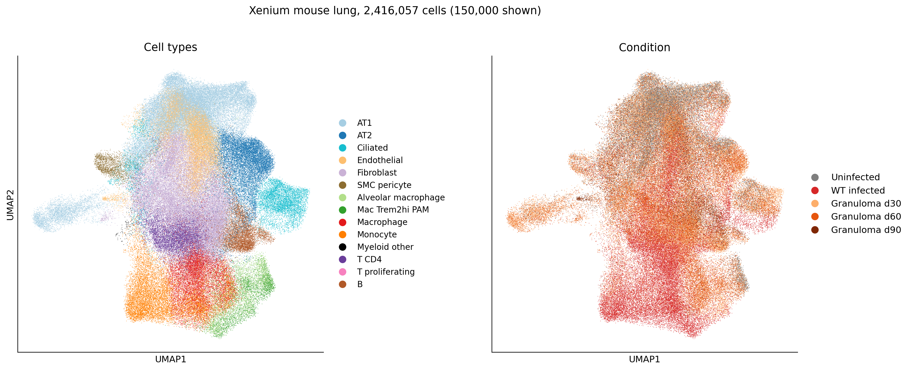
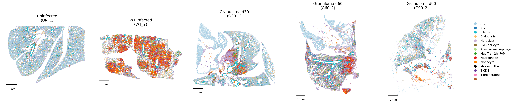
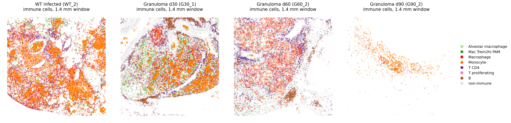
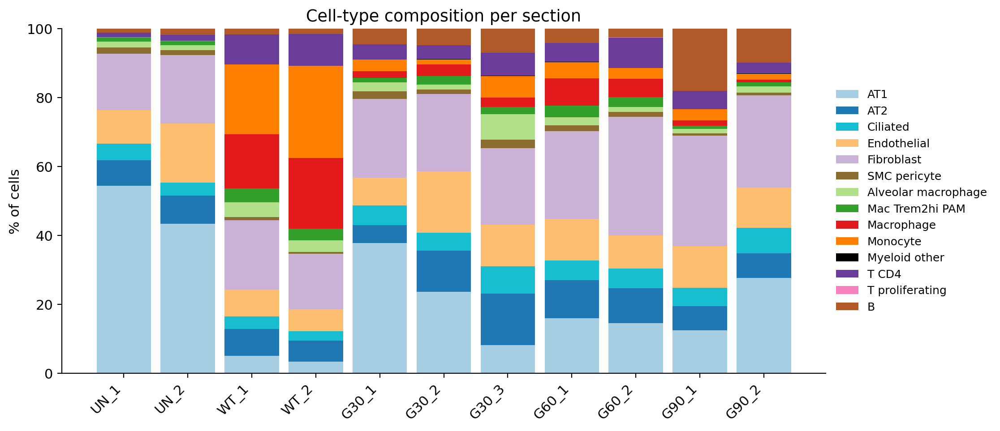
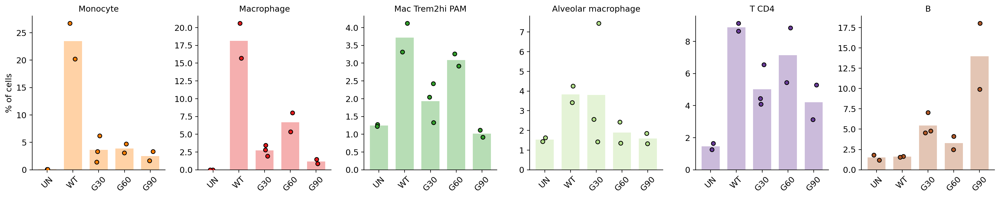
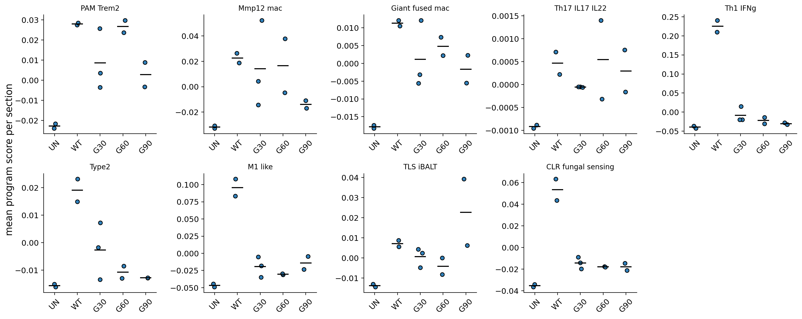
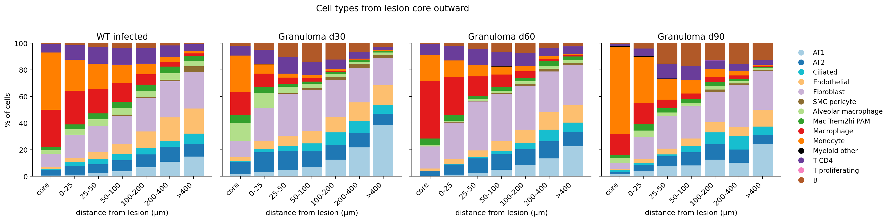
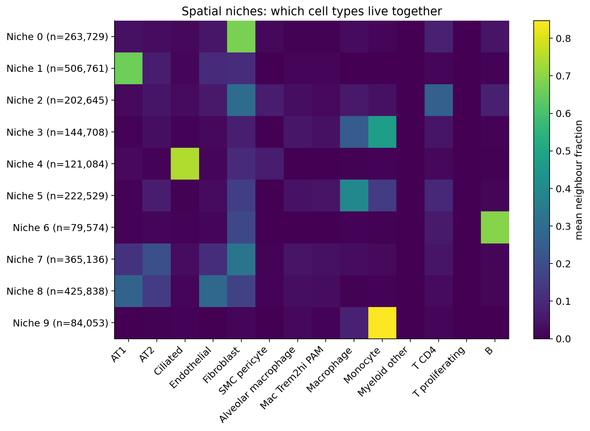

Overview
Single-cell studies of Pneumocystis pneumonia (PCP) have identified the host cells that drive fungal clearance, including Trem2-high macrophages and effector CD4 T cells. Single-cell data cannot show where these cells sit relative to the fungus. Spatial transcriptomics can.
No public spatial dataset of Pneumocystis-infected lung exists yet. This project builds and tests a complete spatial analysis pipeline on the closest public fungal lung atlas, a mouse Cryptococcus neoformans Xenium time course. It uses Pneumocystis lung single-cell data as the annotation reference. The same pipeline can be applied directly to future Pneumocystis Xenium data.
Data
| Dataset | Type | Use in this project |
|---|---|---|
| GSE328931 | 10x Xenium Prime 5K, mouse lung, C. neoformans | Spatial query: 11 sections |
| GSE157627 | scRNA-seq, Pneumocystis-infected mouse lung | Annotation reference |
| GSE225246 | scRNA-seq, Pneumocystis lung with glucocorticoids | Annotation reference |
Conditions: UN = uninfected (2 sections) · WT = wild-type C. neoformans infection (2) · G30 / G60 / G90 = Δgcs1 granuloma model at days 30, 60 and 90 (3, 2, 2).
Methods
- Load and QC (
01_load_qc.py): Xenium outputs per section, cell filtering on counts, genes, negative-control fraction and cell area, then normalization. - Reference (
02_reference_scRNA.py): Pneumocystis lung scRNA-seq data harmonized and restricted to genes on the Xenium panel, then a CellTypist model trained. - Two-tier annotation (
03_annotate_label_transfer.py): clusters get a broad lineage from canonical markers, and CellTypist assigns the sub-state within that lineage. Labels were then checked against marker dot plots and corrected where markers disagreed. - Spatial niches and lesions (
04_spatial_niches.py): neighbourhood composition (50 µm radius) clustered into 10 niches. Lesions defined as dense, macrophage-rich regions, with distance rings drawn around each lesion. - Time course (
05_timecourse_stats.py): cell-type composition and gene-program scores (e.g. Th1/IFN-γ, M1-like, C-type lectin fungal sensing, TLS/iBALT) compared across conditions. - Figures (
06_portfolio_figures.py): a fixed colour per cell type across every figure.
All steps run as SLURM jobs on Tulane's Cypress HPC cluster in a reproducible conda environment (code/env/environment.yml).
Results








Key findings
- Acute infection is myeloid-driven. WT-infected lungs contain tens of thousands of monocytes and macrophages per section, versus almost none in uninfected lung.
- Lesions are layered. A myeloid core is surrounded by a lymphocyte rim, with normal alveolar tissue beyond it.
- Granulomas mature toward organized lymphoid tissue. B cells rise over time (about 14% of cells at day 90), together with the TLS/iBALT program and a B-cell-dominated niche.
- The pipeline works end to end on 2.4 million cells and is ready to apply to Pneumocystis Xenium data.
Limitations
- The spatial data are from Cryptococcus, not Pneumocystis. The Pneumocystis scRNA-seq data serve only as an annotation reference, so no claims are made about Pneumocystis lesions themselves.
- Th17 program scores were very low on this panel, so no conclusions are drawn about Th17 cells.
- There are only 2–3 sections per condition, so results are descriptive rather than formally powered.
- Cell labels come from label transfer plus marker checks; rare or transitional states may be merged.
Next steps
- Apply the pipeline to Pneumocystis-infected lung Xenium data from the Kolls lab.
- Test whether Trem2-high macrophages and IL-17/IL-22 programs form niches around Pneumocystis foci.
- Link genes enriched in lesion niches to circulating cell-free RNA candidates for diagnostics.